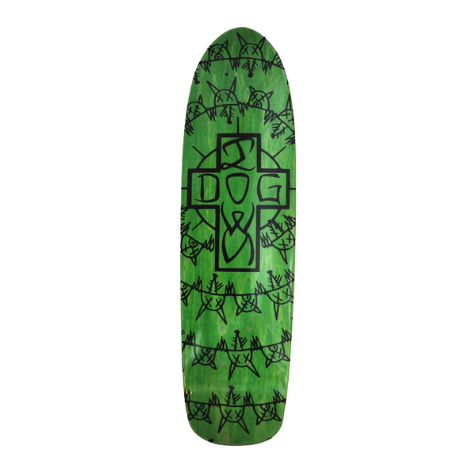
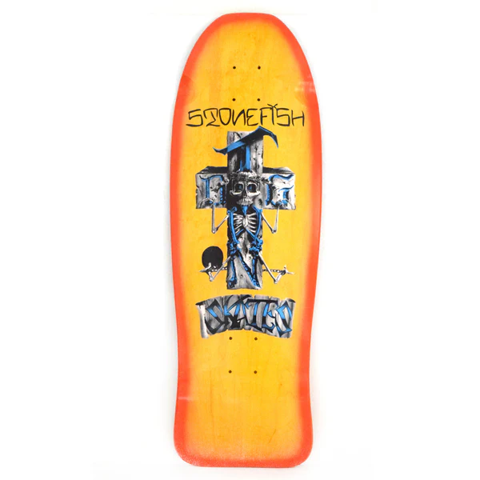
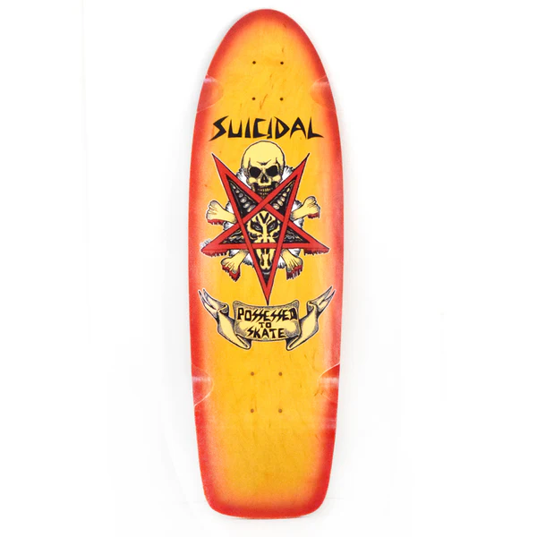

Dogtown Big Foot OG 70s Classic Deck 11.875" X 30.75"
Dogtown Big Foot OG 70s Classic Deck
70s Classic Shape with a Mellow Concave
Art by Wes Humpston
Made at PS Stix
11.875" X 30.75" x 15.75"wb

Dogtown Rat Ring Cruiser Deck - 7.375" x 26.5"
Dogtown Rat Ring Cruiser Deck - 7.375" x 26.5"
Made at PS Stix
Assorted Stains (Color Stain May Vary)

Dogtown Stonefish 80s Reissue Deck - 10.125" x 30.325" (Made in USA)
Dogtown Stonefish 80s Reissue Deck
Made at Watson Laminates in the USA
Front Wheel wells
Hard edge top
Yellow / Orange Fade

Suicidal Skates Possessed to Skate 70s Classic Deck 9" x 30" (Made in USA)>
Suicidal Skates Possessed to Skate 70s Classic Deck
Art by Ric Clayton
70s Classic Shape with a Mellow Concave
Made at Watson Laminates in the USA
Natural / Blue Fade or Yellow / Red Fade
Graphic Color May Vary